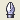
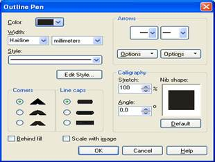

1. Контуды және құюды өңдеу
2. Контурдың параметрлерін баптау
3. Құюларды қолдану
CorelDraw –да әрбір объектің екі негізгі атрибуты бар:
Outline (контур), Fill (құю). Контур немесе абрис деп объектінің формасын анықтайтын сызықты атайды. Құю контурмен шектелген аймақтын тїстік параметрлерін анықтайды. Құю тек тұйық объектілерде болады.
Контурдың параметрлерін баптау


Контурдың параметрлері:
Color – контурдың түсі
Width – контур сызығының қалыңдығы
Style – контурдың стилі
Edit Style – сызықтар үшін меншікті стиль құру
Corners – бүїгілген жерлердегі контурдың түрі
Line caps – сызықтар ұштарының түрі
Arrows – бағыттаушылар (стрелкалар)
Calligraphy – каллиграфия (қаламмен немесе қылқаламмен сызылған сызықты баптау)
Behind Fill - контур құюдың үстіне салынады ма екені анықталады. Контур құю үстінде болса, онда контурдыѕ қалыңдығы екі есе кішірейеді
Scale with image - объектпен қоса масштабтау
Объектінің құю параметрлерін орнату үшін Fill палитрасы қолданылады.
1. Uniform Fill – біртүсті құю (однородная заливка).
2. Fountain Fill Dialog – градиентті құю.
Градиентті құюдың параметрлері:
· Type – градиенттік құюдың түрін анықтайды: Linear (сызықтық), Radial (радиальдық), conical (конустық), sguare (квадраттық).
· Center Offat – градиент ортасының ауытқуы.
· Angle – градиенттің бастапқы бұрышын анықтау.
· Steps - (шар) қадам саны 256 max
· Edge pad – объектінің шетінен шегініс.
Тїсті араластыру екі режимде жүргізіледі:
· Two Color (екі түсті)
· Custom (қолданушылық)
Two Color режимінде екі түс қолданылады.
Mid Point (орта нүкте) – түстік ауысудың шекарасын анықтайды.
Custom – режимінде градиенттік құю үшін түстің шексіз санын қатыстыруға болады.
Fountain Fill Dialog – сұхбат терезесінің төменгі жағында CorelDraw пакетімен бірге орнатылатын градиенттер: «+» тізімі орналасқан батырмасы көмегімен қолданушы құрған градиенттік тізімді құруға болады. « - » белгісі тізімнен жояды.
3/ Pattern Fill Dialog (pfkbdrf ntrcnehs) – j.vty құ./
Параметрлері:
1. Оюдың түрі:
· Two Color – екі түсті.
· Full Color – толық түсті.
· Bitmap – растрлік.
2. Origin – ауытқуы. Объектінің ортасы бойынша оюдың ауытқуын анықтайды.
3. Size – оюдың көлемі.
4. Skew – оюдың наклоны.
5. Rotate – оюды айналдыру.
6. Transform fill with object - оюды объектімен қоса өзгерту.
Load – батырмасы көмегімен оюды файлдан жіктеуге болады. Create – батырмасы көмегімен оюды құруға болады.
4. Texture Fill Dialog – текстурамен құю.
Параметрлері:
1. Texture library – текстуралардың әр-түрлі кітапханаларын таңдау үшін арналған тізім.
2. Style – текстураның сыртқы түрін өзгерту параметрлер тобы.
3. Preview –алдын - ала құру.
4. Tiling – наложение.
5. Options – көмегімен текстураны растрилизациялау параметрлерін орнатуға болады.
· Bitmap resolution – растрлік оюдың шешілуі.
· Maximum file width – пикселдер саны көрсетіледі.
ЕСКЕРТУ: Текстуралық құюларды қолдану, бейнені экранға шығару және қағазға басуын баяулатады.
Бақылау сұрақтары:
1.СorelDraw-да құюдың неше түрі бар?
2.Eyedropper және Paintbucket саймандары не үшін қолданылады?
3.Outline Pen сұхбат терезесіне сипаттама беріңіз.